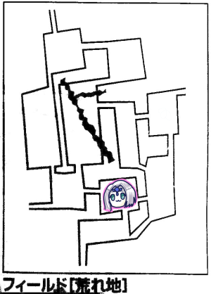
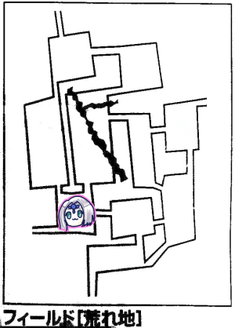
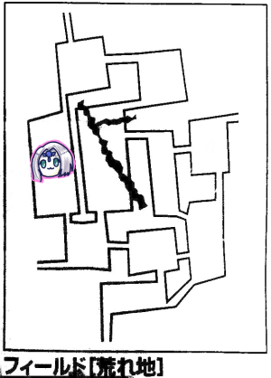
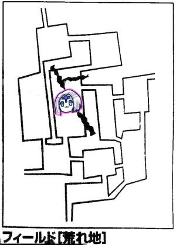
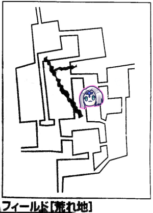
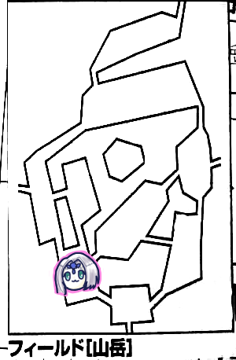
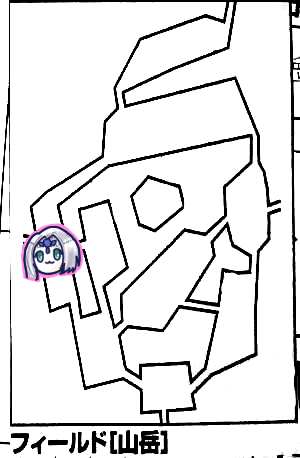

久々の1ヶ月2回開催です。
相変わらずのオンセですが、今回からコリドーンに代わりココフォリア使用となりました。
データの引き継ぎとかがうまくいかなかったからですね。
前回はエターナル5王国の廃都アルテイに潜り、ひたすら遺跡探索をしました。
廃都アルテイ～深度20
GM「君たちは白亜の王城にいます。5つの瞳の紋章の大広間にいます。君たちが足を進めるとそこには怪物が！敵は全部で4体います」
ブルーローズ「4体」
GM「うち1体はダルグブーリー、会ったことありますよね」
ピーター「判定します。出目ひっく、19」
みぞれ「かしこいから大丈夫だよ」
GM「それでも弱点まで抜いてるんだよな」
ナナシ「うさちゃんのメラは一般人にとってメラゾーマだからね」
GM「残りは牛ぐらいの大きさのある四足の獣と、硬い甲羅を背負ったモンスター2体です」
みぞれ「かっぱ」
ナナシ「タートルズ」
ナナシ「弱点看破って有効なのは本人だけ？イグニスにそれっぽいこと書いてあるけど」
GM「そうですね、これうさちゃんだけですね」
「さすがに強すぎるということで」
ピーター「カメ人間魔物知識判定いきます、20」
GM「LV7モンスター、アルガギスです」
ピーター「残り、21」
GM「LV8モンスター、テラービーストです」
みぞれ「うさちゃんの出目が1ずつ上がっていく」
ピーター「これでも平均以下なんですよ」
みぞれ「つよ」
GM「前衛がテラービーストとアルガギス1体、後衛がダルグブーリーとアルガギス1体です」
タッシュ「完全に盾」
ナナシ「これかけらもちは」
GM「ダルグブーリーです」
ナナシ「先制判定します。あぶねー！出目1、2」
ピーター「ファイアーストームを前後に撃ちます、あっこれ数拡大できないことになったんだっけ、じゃファイアジャベリン4倍がけでいいか、22」
GM「全員失敗、出目はいいんだけどなー」
ピーター「じゃあK50で」
みぞれ「K50？」
タッシュ「だいぶおかしいこと言ってる」
ピーター「26点です」
みぞれ「後ろにグレネード放り込みたい」
GM「10mでしょ？できるよ？」
「え、ピーター狙うって？」
「突然の仲間割れ」
みぞれ「まあいいや前衛で。グレネードを」
GM「あ忘れてた、テラーくんでSANチェック16で」
みぞれ「17！グレネード投げまーす、17」
GM「テラーくんぴったり抵抗、アルガギスも抵抗」
みぞれ「15点、もー出目がよくないー」
ナナシ「GMが高めで俺らが低めの出目と考えるとー」
GM「いや、そういう場面いっぱいあったけどね？」
タッシュ「エンチャントしておきたいけど」
ナナシ「エンチャントよりファイアーボールのほうが入るっていうソード・ワールドのアレが」
タッシュ「うまいこといかないと5とか残るけど大丈夫？」
みぞれ「それなんすよ」
ナナシ「それならナナシが削りきれるので」
タッシュ「じゃファイアーボールで」
GM「来なさい、頑張って抵抗するよ」
ナナシ「精神抵抗っていつするの」
GM「あ先に精神抵抗だ、ありがとう、13でどうぞ」
みぞれ「やっぱりGM私にだけ厳しいやん」
GM「トータルではそうでもないよ」
みぞれ「じゃ私が割食ってんじゃん」
ナナシ「みんなが受けるはずだった不幸をみぞれが一身に受けてる」
「ありがとう」
「ありがとう」
みぞれ「やめて」
GM「宗教かな」
タッシュ「21抵抗、ファイアーボール20で」
GM「両方失敗しました」
タッシュ「15点、ほらきた」
アルギガス残り6点、テラービースト残り3点でした。
ブルーローズ「どっち先行く？」
ナナシ「俺行く、前を落とす責務があるから。レザーリボンでアルガギスを攻撃します」
みぞれ「精神抵抗は攻撃対象にした時に判定するの？」
ナナシ「見なかったことにします」
GM「敵が場に存在すれば見ます。見ないと言うならペナつけるよ。18」
ナナシ「じゃあ見ます。22抵抗！攻撃します、うわ17」
GM「12」
ナナシ「17点」
GM「アルガギス倒れました」
ナナシ「テラービーストをレザーリボンで挑発攻撃します。23、きた！」
GM「17、高いんだけどねー回避」
ナナシ「レザーリボン(まわってくださいおねがいします)」
みぞれ「なんかダイスロールコマンドに願掛けテキストが見える」
ナナシ「書いたら回るかなって思って、19点」
GM「テラビ終わった、はい、道は空きました」
ナナシ「叩き込め！」
ブルーローズ「よし、わたくしに殴られたいのはどなたかしら？全ぶっぱかな？ダルグブーリーのところに…ダルグブーリーでいっかなー？」
ナナシ「いいと思う」
ブルーローズ「前進して、異貌化、スフィンクスノレッジ、キャッツアイいるかな？」
ナナシ「ダルグブーリー回避10？いらない、トラストミー」
ブルーローズ「じゃキャッツアイなし、マッスルベア入れて、魔力撃で攻撃、21」
GM「18」
ブルーローズ「34点！」
GM「次を耐えて影走りを使いたい」
ナナシ(代理)「次29！来た！」
GM「6ゾロを出す！15、これでダメージが低ければ」
ナナシ(代理)「うわファンブルした」
ブルーローズ「そう言えばブルーローズはアレ死んでるからSANチェックしなくていいんだっけ」
「アレ(テラビ)」
GM「ダルグブーリーからいくよ。移動します」
ブルーローズ「ブルーローズ今回避下がってますよ」
GM「影走りでブルーローズを無視して後衛のピーターのところに移動します」
ブルーローズ「わたくしを無視しないでー」
みぞれ「うさちゃーん」
GM「爪で攻撃します！クリティカル」
ナナシ「やる気まんまん」
タッシュ「やる気ｗｗｗ」
ピーター「回避ないですよ」
GM「一応振れますよ」
ナナシ「あれ回避振れるの2.5じゃなかったっけ」
タッシュ「平目でも振れるよ」
ピーター「8です」
GM「ダメージ出します。低い、11点」
タッシュ「ダルグブーリーそんな弱いの」
GM「影走りが異様に強いだけだから。ピーターには疲労毒が注入されます。16を目標に生命抵抗お願いします。疲労毒の素敵なところは累積することですね」
ピーター「18、抵抗」
GM「これで連続攻撃が発生します。こいつ3回攻撃です」
タッシュ「つよいねー、これで毒をどんどん注入されるのか」
GM「17で回避お願いします」
ピーター「7、はい」
GM「えーい、16てーん。では毒強度18です」
ピーター「19抵抗」
GM「3回目の攻撃いきます」
タッシュ「たまらんな」
ナナシ「めちゃめちゃボコるやん」
ピーター「ひどーい」
GM「14」
ピーター「5」
GM「12点ダメージです」
ピーター「生きてる！」
GM「毒を受けろ、19」
ピーター「同値抵抗！」
GM「毒なかなか入らないやん」
GM「ではアルガギスの標的はブルーローズで」
みぞれ「よかったね狙ってもらえたじゃん」
ブルーローズ「ほあーーー」
GM「アルガギスは複数宣言で…いやどうだろうこいつ死ぬだろ」
タッシュ「こいつ結構火力あるんだよね」
GM「いや一発にかけよう、18」
ナナシ(代理)「ブルーローズのカウンターいきまっせ、25！」
GM「ずるいよねー、くらいました」
ナナシ(代理)「32点」
GM「生きてた！これでラウンド終了ですな」
「ダルグブーリー(残りHP)みそくそ？」
「みそくそ」
ピーター「じゃ私殴るわ」
みぞれ「殴るの？」
ピーター「ファイアボルト撃ちます」
みぞれ「殴るってそういう」
ナナシ「いや、ナナシがアルガギス落とせると思うからそれでブルーローズに後ろに走ってもらおう。22」
GM「9」
ナナシ「20点！」
GM「アルギガス倒れました」
ナナシ(代理)「続きましてブルーローズが後ろにぴゅっ、行きまして」
GM「20mは走れる？」
ナナシ(代理「無理です、ブルーローズにはそんな距離は走れません！作戦☆瓦解！パーティーの運命やいかに！」
GM「あこれダンジョンだから15mか、いけるわ」
ナナシ(代理)「走っていいすか！えっほ、えっほ」
ブルーローズ「やっぱりハイヒールで戦ってた今までがおかしたったんですわね」
みぞれ「それむしろ敏捷下がっていたのでは」
ナナシ「スフィンクスノレッジ入れるか。どぅりゃ、27」
GM「17、回避できません」
ブルーローズ「あなたよくこのわたくしの目の前を素通りしてくれましたね！と魔神語で」
ナナシ「32点」
GM「生きてるけど体浮いたな」
追加攻撃で33点受けて撃破。
ナナシ「テラービーストは剥ぎ取りは全部自動なんだね」
GM「剥ぐって宣言ないと入手できないけどね」
ブルーローズ「ビビッド歌います」
GM「待って、まずイベントを進めます。魔神を倒すと、頭の中に『刻印を望みますか』と聞こえてきます」
ブルーローズ「はいよろこんでー」
GM「胸にちくっとした軽い痛みが走り、胸に刻印が刻まれます」
ブルーローズ「ちょっと銭湯行きづらくなりますね」
みぞれ「そこ！？」
ナナシ「これ入れ墨じゃないんです！」
GM「じゃビビッドの2点を回復してください。自由行動とは別に探索判定ができます」
探索判定した結果、ガラスケースがあり、黄金のハープがありました。
GM「アルテイのハープです。おねだん8000ガメル」
みぞれ「この楽器シリーズ各廃都に1つずつあるのか」
GM「使うと潜れる時間が長くなります」
「オカリナと同じやつか」
ナナシ「オカリナはブルーローズ持ってるんだっけ、ハープも持っといてくれない」
みぞれ「そうね、バードが持つべき」
GM「帰りますか？探索を続けますか？」
「帰りまーす」
GM「ではセズウィック村に帰ります」
みぞれ「直帰なんだ」
村に戻ってローレンスにアルテイ攻略を報告しました。
残りはイラボスとエッダだけだな！
GM「アルテイクリアにより名声値が5点上がります」
ピーター「また名声が上がるんですか？」
「今号外がめっちゃ出てるよ」
「あの迷宮屋のセズウィックの盾が3つ目の都を攻略！」
GM「総合値が80で村の発展レベルが5になりました。これの最大値は6です。人口は3千人程度、大きな商店も立ち並ぶようになりました」
「育てたねー」
GM「建てられるものが増えました」
「劇場とか建てたいんじゃないですか」
ブルーローズ「建てたいねー」
みぞれ「そう言えば今回ミッション2つ処理したってこと？廃都の探索と主討伐」
「あっ気づかなかったんですけどぉもしかしてラプテラスってこれですかぁー？倒しちゃったんですけどぉー」
「なろう臭がする」
GM「主討伐の報酬は4500ガメルです」
ナナシ「おいしい。主倒して回ろうぜ」
タッシュ「そんでかけらはいくつ手に入ったんだ」
GM「忘れてた8個です」
みぞれ「そういえばこれ10個ずつ納品するクエストがあったはず」
タッシュ「エターナルそんなのあったのか」
GM「では前回の44点を処理しましょう、防衛ポイントを4増やしてください、あと経験点も各自800点増やしてください」
かけらの名誉点は6d6=26になりました。
みぞれ「ええやん、こういう時だけ出目がいい」
ナナシ「こういう時にいいのが肝心」
レベルアップ処理をして、次の予定を決めます。
「湖方面とか、台地の砦とか、ローレンスの息子さんの手紙とかありますね」
みぞれ「♪しろやぎさんからお手紙」
タッシュ「食べるな」
みぞれ「あ、私、ブルーローズの名誉を獲得します。バルバロステイルズの蛮族の名誉の項目使って異貌化でもその辺出歩けるようにできるってGMが言ってたんで」
GM「OKです。これでルキスラまでなら問題なくなりました」
ブルーローズ「異貌化解かない生活をする」
みぞれ「これってエターナルで範囲外に出ることはあるのかな」
GM「場合によってはあり得るかな。ちなみに範囲は名誉点500ぐらいだと水曜どうでしょうぐらいの知名度になりますね。北海道では有名だけど地域外に出るとちらほら知ってる人がいる程度って感じの」
「その微妙な例え」
「劇場は性能としては腐りそうだけどフレーバーとしては欲しいですね」
「劇場って収入とかあるの？」
「51ページにあるよ」
「どこの51ページだよ」
ブルーローズ「私が名誉点150点を使って書いた劇をここで上演します」
GM「村に『スターが生まれる』という称号がつきました」
次はおつかい受けつつルキスラ経由で湖へ行くことにしました。
次の廃都の目処が立っていないため、適当なミッションを受領することに。
ということでライダーズギルドの釣りミッションを受領。
プリズムフィッシュ10匹以上を釣ってきて欲しいというやつです。
5日以内で1つ、3日以内で2つ獲得。
みぞれ「これルキスラ寄ったらダメじゃん」
タッシュ「5日以上かかったら？」
GM「星はボーナスなので大丈夫ですよ。15匹、20匹でもボーナス付きます」
みぞれ「失敗はないってことか」
ブルーローズ「このための劇場です(☆の数が少なかった場合増やしてくれる効果有)」
GM「釣り竿とエサを貸し出してくれます。森と渓谷と湖畔で釣りが可能です」
あとローレンスからルキスラのマギテック協会宛のお手紙を受け取りました。

何も起きません。
GM「タンブルウィードの転がる荒れ果てた台地で1時間過ごすわけですね」
ブルーローズ「今ファンブルウィードっていう縁起の悪い言葉を聞いた」

荒れ地イベントでシルフが現れました。イベントをプラマイ1してくれるそうです。
みぞれ「マイナス一択だな」
ピーター「ですね」
タッシュ「6がなくなるってことだな」
ナナシとみぞれが探索後。
GM「ピーターも探索する？」
ピーター「スカウトで探索します」
みぞれ「ピータースカウトだっけ？」
ピーター「レンジャーでした」

何も起きませんでした。
みぞれ「探索します、あっ遺跡、16個目の遺跡です」
ナナシ「最初はすごい喜んでたけど、今はあっふーんって感じだよね」

何も起こらなかった。平和だった。
探索
ナナシ「今日戦いの装束見つからないね」
みぞれ「今日銀貨袋いっぱい見つかるね」
ナナシ「拾いすぎたんだね」
GM「銀貨袋って財布だからね、それがいっぱい落ちてるってことは」
ナナシ「羅生門のばーさんの気分だね」
ブルーローズ「髪の毛抜く？」
ルキスラに到着。
ブルーローズ「お手紙配達ー」
GM「マギテック協会でお手紙を受け取りました。」
みぞれ「これお返事1日かかる？」
GM「かかります」
みぞれ「じゃ一晩泊まろうか」
ブルーローズ「マギテック協会にかけあって、手紙が書けるまで待って差し上げるので泊めていただけませんか？」
ナナシ「30×5ガメルでそこまで渋るか？そんなこと言うレベル帯じゃないよもう」
GM「そういうことなら依頼は別の方に」
ブルーローズ「冗談はこの辺にして」
ナナシ「我々がいくら英雄でも彼らからしたらただの郵便屋さんだから」
GM「栄光の架け橋亭という名前と外見が釣り合わないボロボロの店があります。大いなる輝き亭という普通の外見の一晩50ガメルの店もありますがどうしますか」
ナナシ「栄光の架け橋亭で」
GM「そうするとみすぼらしい少女が何人もの旅人に断られた後に君たちのところに来ますよ」
ブルーローズ「このあたりで一番安い宿はどちらかしら」
少女「泊まる場所という意味ではうちです」
GM「壁には穴が空いていて紙でふさいであります」
ナナシ「タッシュ先生置いとこうぜ」
ブルーローズ「タッシュ先生を詰めましょう」
ブルーローズ「わたし異貌化といてないんですけど大丈夫なんでしたっけ」
みぞれ「私があることないこと広めておきましたので」
タッシュ「悪口を？」
主人「こんなところに泊まっていただけるなんて」
少女「この人達セズウィックの盾なんだよ！」
主人「そういうものには疎いからわからないなあ」
少女「セズウィックの盾ですよね！？」
みぞれ「そう呼ばれてるらしい」
ナナシ「なんか言われ慣れないこの」
ブルーローズ「どこにサインを書けばよろしいですの？」
2m×80cmの板を少女が持ってきたのでみんなでサインしました。
「寄せ書きみたい」
「こういうものを宿に飾っておくとハクがつくんですよ」
少女はララという名前です。
ララ「何か理由があってここに泊まっているんでしょう？」
ブルーローズ「もちろんそんな感じのあれですわ、マギテック協会に宿をたかったりなんかしていませんわ」
ララ「またまたご冗談をー」
ブルーローズ「思いっきりファンですっていう感じで来られて戸惑ってます」
みぞれ「後ろで笑いをこらえてます」
ナナシ「知ってるか？ナイトメアってのはな、どケチなんだよ」
ララ「倹約家なんですね！」
ブルーローズ「1ガメルを笑うものは1ガメルに泣くと言いますわ」
ナナシ「あれ？ザイアのプリーストだよね？ガメルのプリーストじゃないよね？」
なんだかんだで食事のレベルをあげてもらいました。
主人「セズウィック村周辺を探検してるのか」
ナナシ「俺ら遺跡探索してるんだよねー」
主人「俺たちのパーティーもエターナルを目指してたんだが、途中で挫折したんだ」
みぞれ「それは別のキャンペーンで挫折したパーティーなのでは」
タッシュ「ローレンスさんをご存知ですか」
主人「知らないけど俺は3人パーティーだったな、その中にナイトメアもいた」
みぞれ「あのロリババアのことでは」
タッシュ「台地にいたやつ？」
主人「俺たちは沼地で遺跡を見た、見えたのは一瞬だけで消えちまった」
タッシュ「どのエリアだったのか聞いておきたい、と地図を出します」
主人「沼地でありながら花が咲いている場所だった」
みぞれ「心当たりがないな、我々結構沼地うろうろしてるけど行ってないエリアいっぱいあるのよね」
「でもこれで遺跡コンプできますね」
「いやまだ湖にあるとは限らないよ」
「でもエルフが廃都があるって言ってたような」
みぞれ「そういやエターナルの立ち位置ってなんだっけ」
GM「そこに行けばすべての願いが叶うという伝説の都市です」
みぞれ「存在認知されてるわけじゃないんだ」
ナナシ「セズウィック村も大きくなったし、今度はこの宿を育てていくか」
みぞれ「育成ゲームになってる」
夜が明けて、マギテック協会からの手紙を受け取りました。
何も起きませんでした。
探索で剣のかけらを見つけるなどして先へ。

みぞれ「ここがけ崩れのところだね、ブルーローズ歌っちゃダメだよ」
GM「それ以前にですね、君たちの前に大きな鳥の影が」
ナナシ「フラグ回収したな」
GM「こいつ魔物知識判定成功してたっけ？」
みぞれ「第6回で成功してるって記録あります」
ピーター「魔物知識判定します。19、ひっく！」
GM「弱点は抜けませんでした」
ナナシ「倒しますか」
ブルーローズ「コカトリスからしたらなんでこいつらこないだまでびびって逃げてたのに今回こんな自信満々なんだろうって感じ？」
ナナシ「またこいつらかよ、今度こそ食っちまうぜ、かもしれん」
ピーター「ファイアジャベリンいきまーす。20」
GM「かけらで抵抗値2上がってます。19…」
ピーター「20点！そのままパラミス撃ちます」
タッシュ「じゃあ私もエネルギージャベリンとか打ち込んでみましょうか。21」
GM「抵抗します。クリティカル！」
タッシュ「クリティカルかよー。19点」
みぞれ「ソリバレキャッツアイで、21」
GM「18」
みぞれ「16点ダメージ」
ナナシ「デーモンフィンガーとジャイアントアーム使おう。あーMPがもうない。レザーリボンで攻撃。あとクリティカルレイ入れとこう。22」
GM「14」
ナナシ「うぇーい行きますよ！回った！32点！あとブルーローズのために絡みを。18、わぁ」
GM「18回避」
ブルーローズ「全部入れようかな。トンファー魔力撃キャッツアイスフィンクスノレッジで、27」
GM「19、ダメージください」
ブルーローズ「36点！追加攻撃します、23」
GM「19！」
ナナシ「コカトリスは立っていられるのか！次回、コカトリス、死す！」
ブルーローズ「次回！焼き鳥バーベキュー！36点！」
ナナシ「チキンちゃんぼろぼろやで」
ピーター「でも立ってる」
GM「コカトリスはギラッとにらみつける！君たちはコカトリスが笑ったような気がした！威嚇するようにコケーッと鳴くと大空へ飛び上がり逃げる！ただ出会った場所が悪かった！ここは落石が起こります！」
タッシュ「まさか落石で死ぬ？」
みぞれ「あれ戦闘開始直後じゃなかったっけ」
GM「忘れてたのよ。1d6どうぞ」
ナナシ「起こせ落石！」
ブルーローズ「3です」
GM「3は荒れ地イベント表なんですよ。1d6振ってください」
ブルーローズ「シルフが出てきて、コカトリスはここにいるよ！って」
ナナシ「知ってるわ」
ブルーローズ「5です」
GM「あーシルフが出てきて…コカトリスは逃げました」
タッシュ「逃げるのか」
ブルーローズ「追撃とかできないのか」
GM「レンジャー技能+知力で目標値15でどこへ逃げたかわかるよ」
みぞれ「17、成功」
GM「主の巣にいます」
タッシュ「モンハンみたいになってきた」
ナナシ「追撃するか」
みぞれ「リソース食っちゃったしな、返せ」
ナナシ「そっかー挑発攻撃しておけばよかったのか、俺かブルーローズに来ると思ってたから」
ブルーローズ「ここは歌えないんですよね」
みぞれ「歌わないでください」
ブルーローズ「歌いたいなー」
探索します。探索班全員成功。結果を振ります。
ナナシ「7」
ピーター「6」
みぞれ「6」
ナナシ「お前らやる気あんのかー！」
GM「戦いの装束です」
「やったー」
GM「ころころ、1d6+3＝4」
みぞれ「今のロールなに？」
GM「秘密」
ナナシ「回復でしょ」
旅人イベントが発生。
GM「セズウィックの盾のみなさんに会えるなんて幸運でしょう、村まで案内していただけませんか？」
みぞれ「今から一狩り行くけどいい？」
タッシュ「コカトリスは能力的に後衛に攻撃飛んでくることはないからいいかな？」
ナナシ「先制で潰すからいいよ」
GM「あ、あ、あ、やっぱりご遠慮させていただこうかと」
ピーター「この人商人？貴重な商業値は離しません」
ナナシ「人を人として見てない」
ナナシ「剣のかけら見つけたわ」
みぞれ「今日よく見つかるね、なんかあったのかな」
GM「コカトリスが去っていったところに点々と」
「落としていったのか」

GM「1d6+5＝10」
ピーター「イベント6、あ」
ナナシ「きたー！ここにきて」
GM「追撃をしようとしたらそこに現れたのはー」
タッシュ「コカトリスの手下」
GM「あ、すげぇ、こんなとこまでモンスター表来てるんだ、みんな育ったもんだ」
ナナシ「コカトリス並に強い連中を相手にしなきゃいけないんですね」
GM「ですね。ピーターさん1d6振ってください」
ピーター「2」
GM「身長3-4mぐらいの青銅でつくられた巨体が2体、これはタッシュ先制にはわかりますがブロンズゴーレムです。あとはハワイっぽい名前です。トンボのような複眼を持った虫が1体」
「ハワイ…？」
ピーター「ブロンズゴーレムから行きまーす。23」
GM「弱点抜きまくりっすよー」
ピーター「トンボ22」
GM「ティキラです」
ピーター「ファイアーストーム撃ちまーす11、まって私さっきから減らす先MPじゃなくてHPにしてなーい？」
タッシュ「命を削って魔法を撃つ」
ピーター「HPを戻してMP削って、ブロンズゴーレム撃ちます。22」
GM「ゴーレム1の左半身だけ抵抗成功」
ピーター「21点です」
タッシュ「エネルギージャベリン×4はさすがに馬鹿だよなー」
ナナシ「これ倒したら一度村に戻った方がいいと思うんですよ。うさちゃんのリソース的に」
タッシュ「じゃいっそ全員に撃とうかな。MP45点払って、残り56点」
みぞれ「あたまおかしい」
ナナシ「この豪快さがタッシュ先生の味」
タッシュ「じゃべりーん、で16、でせっかくだからー、指輪割って高めようと思ったんだけど、ゴーレムって抵抗いくつ？」
GM「12」
タッシュ「割ってもって感じだね、そのままで」
GM「ゴーレム軍団が抵抗します。あ、2体目の右半身がしくじった。ほかは抵抗成功」
タッシュ「21点です」
みぞれ「グレネード放り込むか。20」
GM「ゴーレム2だけ抵抗」
みぞれ「あー回った、なんでこんな時に。クリティカル無効なんだよね、21点」
GM「ゴーレム両方きれいに左だけ残った」
ナナシ「魔法組がきれいに21点ずつ出してるな」
ナナシ「影走りで後ろに行ってティキラの首を…締められますか？」
GM「体長20cmだから無理かな、ガンプラぐらいでしょ」
ナナシ「じゃブルーローズの活路を開きます。デーモンフィンガーとジャイアントアーム使うか。ゴーレムを攻撃。ぐわーファンブル」
GM「ティキラが大笑いはじめました、魔神語で口汚く罵ってます」
みぞれ「『笑い上戸』発動して魔法使ってこれなくなりましたね、これは怪我の功名」
ナナシ「もっかいいきます、24」
GM「2d68、あ間違えたトランザムしちゃった、今のロールなしで振り直し。19」
ナナシ「24点」
GM「壊れた！」
ブルーローズ「ティキラに接敵して、そんなに乗せなくて平気かな？」
ナナシ「素殴りでいいと思う」
ブルーローズ「魔力撃トンファーで。23」
GM「12」
ブルーローズ「29点です」
GM「ティキラが魔神語で笑ってナナシ指差しながら前進」
ブルーローズ「通訳します」
GM「やっべーあいつリボン全身に巻きつけて失敗しやがったよー！ブルーローズに攻撃します。ぱんち！21！カウンターするかい？あ、飛行足すの忘れてた、22でお願いします」
ブルーローズ「今何も乗せてないから足りないかな？でもどっちにしろ回避はできないかな、カウンターします。よいしょ、21」
ナナシ「ブルーローズ木っ端微塵だわ、ブルーローズ、完」
ブルーローズ「これ器用の指輪足してもいいですか？あ、カウンターは上回らないといけないんだっけ。甘んじて受けよう」
GM「21点打撃、手番が終わったので笑いがおさまりました」
ナナシ「ブルーローズが殴るかい」
ブルーローズ「カウンター外されてイラッときたので殴ります。トンファー魔力撃スフィンクスノレッジ、で21」
GM「17、あーダメだ」
ブルーローズ「28、あっスフィンクスノレッジ入れてない、30点！追加攻撃します、23」
GM「20」
ブルーローズ「33点」
GM「倒れました」
GM「あ、うっかりした、商人配置するの忘れてた」
ピーターがティキラを、ナナシがブロンズゴーレムを剥いだ。
ブルーローズがビビッドを歌った。
タッシュ「探索します、9です」
みぞれ「えっ先生剥がないの？ここは私が剥ぐしかない…ごめんミスリルは剥げなかったよ」
ナナシ「タッシュ先生が剥いでいればその出目でミスリル手に入ったのに」
ブルーローズ「タッシュ先生MPぶっぱしたからお疲れなのよ」
GM「あれを使うんですねー」
みぞれ「うさちゃんあれを使ってください」
ピーター「あれ使います！」
いつものあれ(＝豆の木)を使用して割れ目を突破。
GM「時間使わせたいのに使ってくれない…これが最後の回復だ！13、少し回復した！」
ナナシ「さっきまで秘密言うてたのにもう回復言うてる」
GM「もう巣に到着したから、着いたらばらそうと思ってた」

GM「初めて来た時の思い出が蘇りますね。コカトリスは石化した人々を食って体の傷を癒やしていたんですが、癒やしきれませんでした。じりじりとあとずさっていきます」
ナナシ「ここで会ったが百年目」
ブルーローズ「自宅まで追いかけてきたよこいつらー！」
ナナシ「先制どーん、17」
GM「プレイヤー側です」
ピーター「弱点のために魔物知識判定します、25」
GM「抜かれたー」
ナナシ「ブルーローズが殴ってナナシが殴って終わりだと思うので、ファナティかけてもらえる？」
タッシュ「ファナティかけます」
みぞれ「エフェクトバレットをブルーローズにかけよかな」
ブルーローズ「みんな、私に力を！」
みぞれ「そんな感じ。はい成功、氷のかけらがトンファーの周りにふぁんふぁんふぁーん」
ブルーローズ「凶悪なつららがトンファーから生えた」
みぞれ「私がイメージしてたのと違う」
ナナシ「コカトリスめっちゃ冷や汗流してそう」
ブルーローズ「25」
GM「18、ダメですね」
ブルーローズ「39点！」
GM「えーと、倒れました」
みぞれ「え、今めっちゃコカトリスのHP計算しようとしてたのに」
GM「巣の探索ができます」
ブルーローズ「前にやった気がするけど」
GM「じゃダメだ。あ、倒す前後で探索できますね」
ピーター「コカトリス剥ぎます。5、ひっく」
GM「何もなしです」
ナナシ「巣の探索をします。18」
GM「成功。では2d6を5回振っていきます」
GM「粗末な武器、魔法文明の本」
ナナシ「い、今乱数調整してるから」
GM「粗末な武器」
ナナシ「手応えを感じる」
GM「宝石」
ナナシ「ラスト！」
GM「粗末な武器5本」
ナナシ「よっしゃ！」
みぞれ「これ前にクエストのために買ったやつだよね、こんなところで手に入ったんだね」
商人「もう勘弁してください、スリルがありすぎます！」
ブルーローズ「いい経験になったでしょう？」
商人「冒険者や吟遊詩人ならいいんでしょうけど！」
ナナシ「悪いがこれから湖に行ってもらうぞ」
みぞれ「何が起こるかわからんからいったん置いていこうよ」
ブルーローズ「泣いて頼んでますよ商人」
商人「湖は新規商売ルートが開拓されてるらしいですけど、私は穏便に稼ぎたいんです」
「ここも主いなくなって安全になりましたからね」
ブルーローズ「もう主振らなくていいんですね！」
何も起きませんでした。
ナナシ「探索ファンブル」
GM「持っている悪魔の血が笑った気がした」
村に戻ってきました。
連れてきた商人は息切れした感じで去って行った。商業値が30になった。
GM「次80で特殊な施設が建てられます」
みぞれ「遠いな」
GM「名声値いくつ？」
ピーター「51です」
GM「名声値の80もあるのよ、オベリスクっていう街の歴史を刻む石碑がね。これ成長判定振り直せるんだよね」
ナナシ「すげぇ欲しい」
お手紙をローレンスに渡しました。

山岳イベント。
GM「突風が吹き荒れる！生命抵抗判定を行ってください！どれだけ山風が強いかというと、2d6+9=20を目標に振ってください」
ブルーローズ「レジスタンス歌っていいですか」
GM「これは前奏ないね、いいですよ」
ブルーローズ「レジスタンス、聞いてください、成功」
ピーター「ウィンドガード使います、数拡大で全員に。成功！」
ナナシ「探索ファンブルしました」
みぞれ「飛ばすねー」
GM「悪魔の血が笑っている」

猟師イベントが発生。
ブルーローズ「猟師を見かけた瞬間全員伏せの体勢」
GM「魔物がいそうな場所を教えてくれます。イベントにプラスマイナス1できます」
気をつけて探索。

ナナシ「イベント6です」
GM「モンスターですね。マイナス1しなかったんだ」
ナナシ「マイナス？」
みぞれ「さっきの漁師が魔物のいる場所を教えてくれてイベントプラマイ1できた」
ナナシ「あー」
GM「アードラーストライカー×2、あと背のたかーいモンスターが1体」
みぞれ「それはオーガウィザードでは？会ったことありますよ」
ナナシ「ケンタウロスレッグ使いまーす」
GM「ティキラくんが大笑いしたいところ、大惨事が見たい」
ナナシ「いやじゃ。1、2で18」
GM「ケンタウロスレッグがなければ！同値じゃん負けた」
みぞれ「炎弱点だしグレネード投げとくか。アードラーが前衛だよね？21」
GM「両方失敗」
みぞれ「18点」
GM「両方ちょっと燃えた」
ピーター「じゃいつものようにファイアーストームを。20」
GM「よしワンちゃんある！アードラーいけ！両方抵抗失敗」
ピーター「20点」
GM「あ！生き残った！」
ピーター「弱点看破分入れてくださいね」
GM「死んだ」
ナナシ「パラミスって今撃てる？」
ピーター「撃てる撃てる、ではオーガウィザードに撃ちます」
タッシュ「オーガウィザード1体になったらジャベリンがいいかな」
みぞれ「オーガウィザード、ブルーローズとナナシで沈まない？」
ナナシ「ファナティがいいかなー」
タッシュ「じゃファナティを2人に。かけました」
ナナシ「ナナシがまず出まして、クリティカルレイを切りまして、レザーリボンで攻撃します。クリティカル」
GM「18、無理です」
みぞれ「極端やなナナシくん、出目が」
ナナシ「今日ぶっ飛んでる、2回転34点！もっかい攻撃、25」
GM「19」
ナナシ「1回転して27点」
みぞれ「なんでそんな回せるんｗ」
みぞれ「これブルーローズがぱぁんてすれば終わるよ」
ブルーローズ「じゃ接敵してー、もう移動するだけだし全部乗せちゃうか。万が一残ったらあれだし」
みぞれ「いやーそれはないと思うよー」
ナナシ「命中さえ上げとけばいい」
ブルーローズ「もう減らしちゃったんで全乗せで。トンファー魔力撃キャッツアイ・スフィンクスノレッジで26」
GM「5、6で22、出目はいいのに避けられない」
ブルーローズ「よいしょ！1、2で35点」
ナナシ「出目がかわいい」
ブルーローズ「いつも出目がかわいいんですよねここね！」
撃破しました。
みぞれ「探索しまーす」
ナナシ「先に探索をする」
みぞれ「あっ剥いでなかった
GM「順番的には問題ないですよ」
ナナシ「オーガ剥ぎます。銀貨袋4個」
みぞれ「財布いっぱい手に入るな」
ナナシ「こいつらのせいじゃない？」
剥いだら宝石がいっぱい手に入りました。
タッシュ「やっぱこいつらどこかの村襲ったんだ」
ナナシ「フィールド跨ぐからブルーローズHP回復しといたら？」
ブルーローズ「ブルーローズなんでこんなに減ったんだ？」
ナナシ「多分MP削る処理で間違えてHPから削ってるね」
タッシュ「みんな命削りすぎや」
ブルーローズ「直した！これでよしと」
GM「ここで時間切れとなりましたので、移動してフィールド移動で回復して、次回湖畔からになります。ちなみに現時点での達成度は35です」